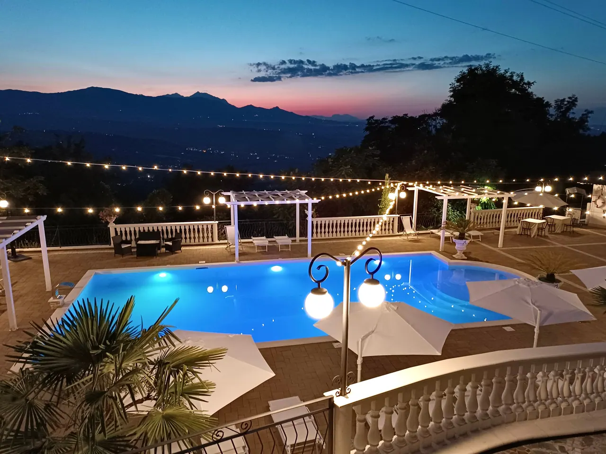
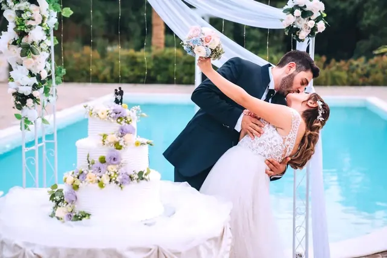
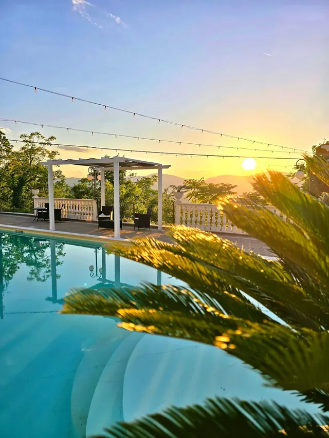
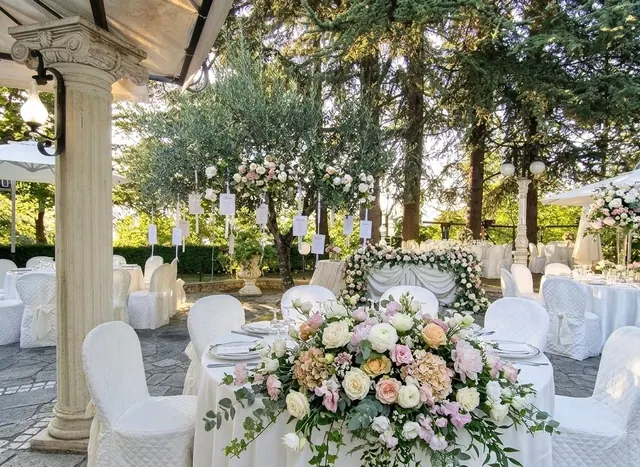
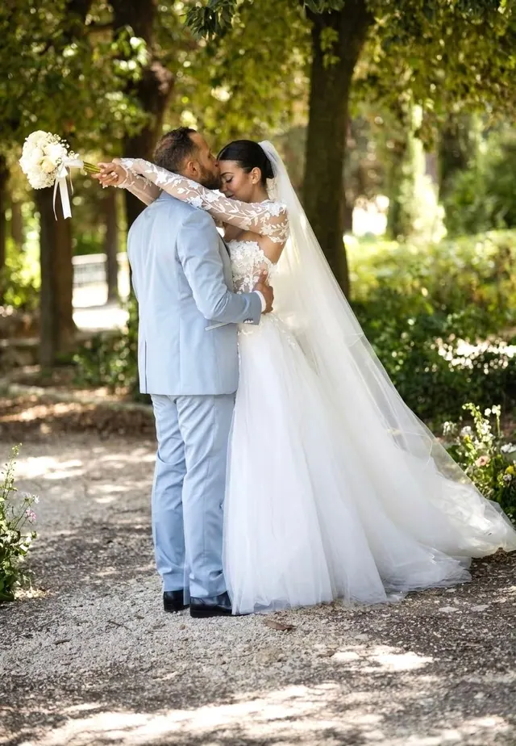
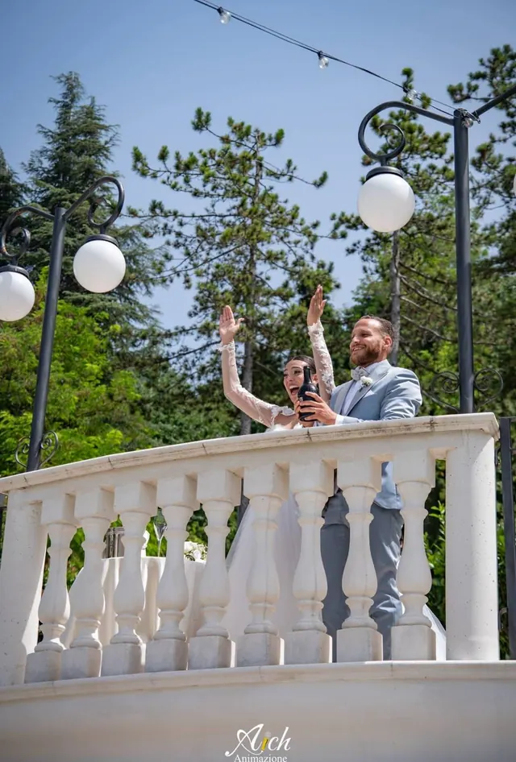
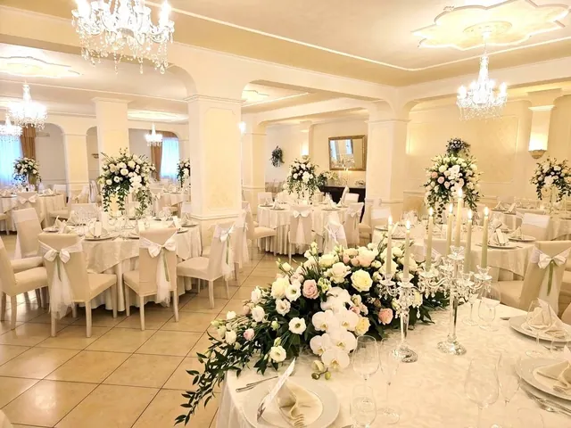
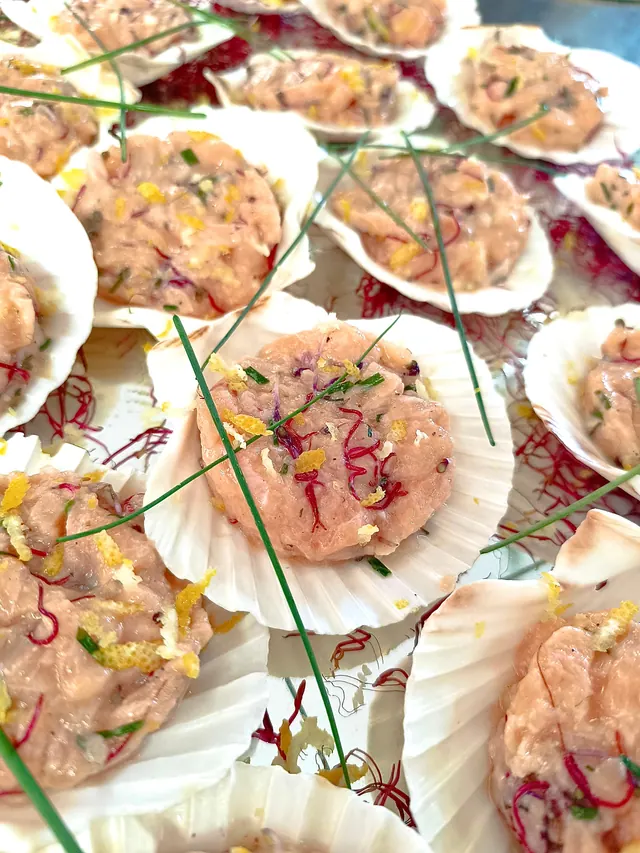

La storia
La Villa nacque nel 1998, come atto di ammirazione da parte del signor Mancini verso sua moglie Anna.
Da questo legame e da un tributo di rara bellezza prende vita “Villa Anna” situata nel cuore dell’Abruzzo.
La Villa
Le linee pulite della struttura incontrano la bellezza del paesaggio, creando la cornice perfetta per i momenti più importanti.
Caratterizzata da spazi ampi, luce naturale ed eleganza essenziale per dare forma a ogni evento.

Le Sale
Le Sale e gli spazi interni vengono allestiti su misura, seguendo i gusti e i desideri dei nostri ospiti per creare un’atmosfera unica.
Dalla scelta floreale ai tableau personalizzati, fino ai raffinati centrotavola e alle decorazioni coordinate, ogni dettaglio è curato per raccontare la vostra storia.
La struttura dispone di due sale principali:
La prima sala, ampia e versatile, con una capienza fino a 200 persone.
La seconda sala, più intima e raccolta, con una capienza di 90 persone.
Inoltre, nelle giornate di sole, la magia dell’evento si estende all’aperto, con la possibilità di ambientare momenti indimenticabili nella splendida cornice a bordo piscina.
- Sala principalefino a 200 persone
- Sala più intima90 persone

La Cucina
La nostra cucina nasce dalla passione di Anthony Mancini e del suo attento staff. Insieme, danno vita a piatti raffinati che valorizzano i sapori autentici del territorio, reinterpretandoli con un tocco di innovazione.
Il menù offre proposte curate sia di carne che di pesce, pensate per soddisfare ogni esigenza, tutte realizzate con ingredienti di altissima qualità scelti per stupire ed emozionare ad ogni assaggio.
Matrimoni
Dalla cura meticolosa di ogni singolo dettaglio alla suggestione unica di poter coronare il proprio sogno nella fiabesca atmosfera, dove offriamo una cornice di raffinata eleganza in cui l’amore autentico trova la sua espressione più sublime.
La nostra attenzione per ogni dettaglio vi accompagnerà in ogni istante della giornata: dall’aperitivo di benvenuto, all’eleganza del pranzo, dal ricco buffet di dolci e frutta fino all’emozione magica del taglio della torta a bordo piscina.
Gli Eventi
A Villa Anna ogni traguardo merita una cornice indimenticabile. Oltre ai grandi ricevimenti, la nostra location si trasforma per ospitare i tuoi momenti più belli ed esclusivi: feste di laurea, diciottesimi, comunioni ed eventi privati.
- Matrimoni
- Battesimi
- Comunioni
- Cresime
- Diciottesimi
- Feste di laurea
- Compleanni
- Anniversari
- Cene aziendali
- Eventi privati
- Allestimenti personalizzati, giochi di luce suggestivi
- Angoli dedicati per rendere ogni scatto perfetto da ricordare e condividere.
- Menù studiati ad hoc, dal buffet ai cocktail bar dedicati, fino al taglio della torta scenografico.
- Spazi attrezzati per DJ set e intrattenimento live, per ballare e festeggiare.
Galleria
Contatti e preventivo
Richiedi un preventivo per il tuo evento
Raccontaci cosa state festeggiando, quando e quanti sarete. Vi ricontatteremo per parlarne insieme.
Preferite parlarne a voce? Chiamate lo 085 857 9011.
WhatsApp 349 407 8359Richiesta inviata!
Vi ricontatteremo al più presto. Ecco il riepilogo della vostra richiesta:
Per qualsiasi necessità potete chiamarci allo 085 857 9011.
Chiamateci, saremo felici di accogliervi
085 857 9011Per orari e prenotazioni chiamateci. Su WhatsApp ci trovate al 349 407 8359.
Dove siamo
Via Provinciale per Scafa65020 Lettomanoppello (PE) 4,8 su Google · 17 recensioni
65020 Lettomanoppello (PE)
Caricando la mappa, Google riceverà alcuni dati di navigazione.
Il ristorante
A Villa Anna si viene per un pranzo in famiglia, una cena tra amici o una tavolata di festa.
- Cucina
- Italiana
- Per i gruppi
- Sala privata
- Per i più piccoli
- Menù bambini
- Orari e prenotazioni
- 085 857 9011
Domande frequenti
Si può visitare la villa prima dell'evento?
Sì. Visitare le sale e il giardino fa parte del modo in cui organizziamo ogni evento. Chiamateci per fissare il giorno della visita.
Si può celebrare la cerimonia in giardino?
In giardino c'è un gazebo che viene allestito per le cerimonie, con il tappeto rosso e le sedie per gli ospiti. Per i dettagli sul vostro rito chiamateci.
Avete un menù per bambini?
Sì, il ristorante ha un menù per bambini.
C'è una sala privata?
Sì, c'è una sala privata per i gruppi. Chiamateci per verificare la disponibilità nella data che vi interessa.
Quanto costa?
Per gli eventi prepariamo un preventivo su misura: compilate il modulo o chiamateci. Per il ristorante chiamateci allo 085 857 9011.
Come si prenota?
Per un tavolo al ristorante chiamate lo 085 857 9011. Per un evento potete chiamare o compilare il modulo per il preventivo.
Quali sono gli orari?
Per orari e prenotazioni chiamateci allo 085 857 9011.